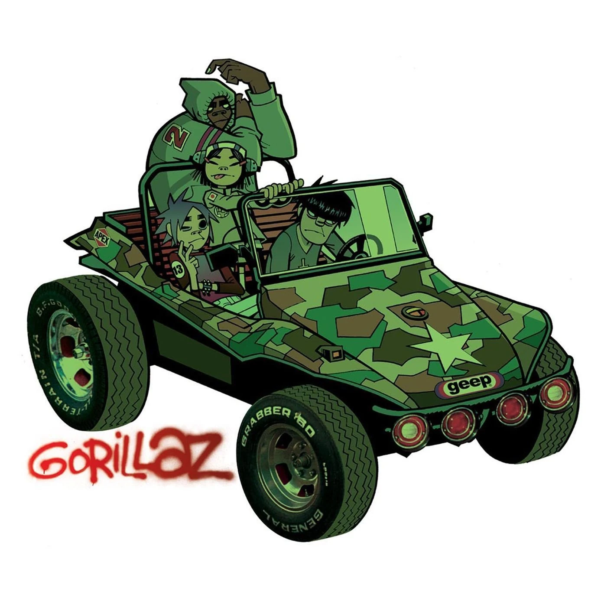

Опубликовано: 5 сентября, 2025 года, 21:10
Помните тот самый гипнотизирующий бас из «Clint Eastwood»? В начале нулевых четверка мультяшных бандитов из Gorillaz совершила невозможное: их странный электронный альбом стал всемирной сенсацией. Но как андеграундный саунд покорил топ-чарты?
Да, виртуальная группа была гениальным ходом. Они давали интервью и крутились на MTV, создавая ажиотаж. Но за рисованной ширмой скрывалась музыка гения — Деймона Албарна из Blur.

Деймол Албарн в клипе Blur - Song 2
Секрет Gorillaz был в эклектике. Группа не выбирала один жанр. Они смешали всё: ломанные трип-хоповые биты, глубокий дабовый бас, живые гитарные риффы и рэп-фиты. Это был свежий звук, который не пытался угодить всем, но оказался нужен всем. И этот стиль они пронесли через года и до альбомов наших дней.
Они стали нужными героями в нужное время. Публика устала от пафоса гитарных групп. Gorillaz предложили иронию, отсутствие границ и чистую музыку без нарциссизма настоящих звезд. Их виртуальность была не уловкой, а свободой.
Обложка Gorillaz - 2001
Итог? Gorillaz не просто выпустили хиты — они сломали систему, доказав, что мейнстрим готов к экспериментам. Они были и остаются символом эры виртуальных аватаров, изменив музыку навсегда.
Перейти к альбому Gorillaz - 2001